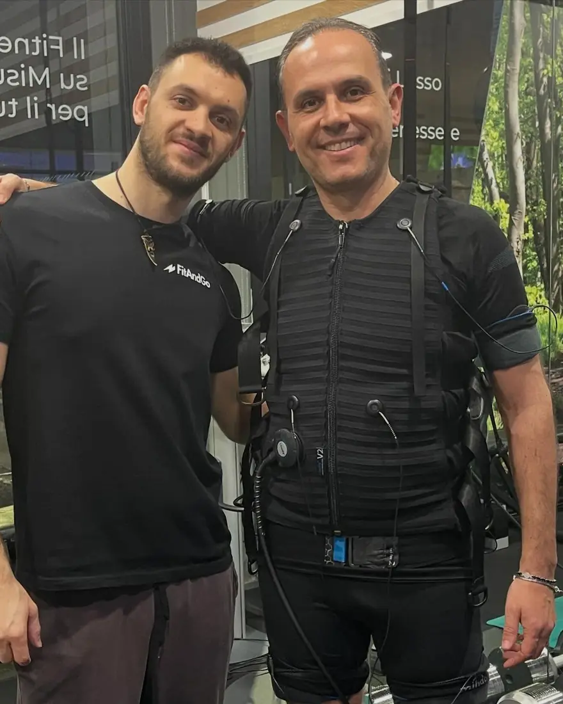
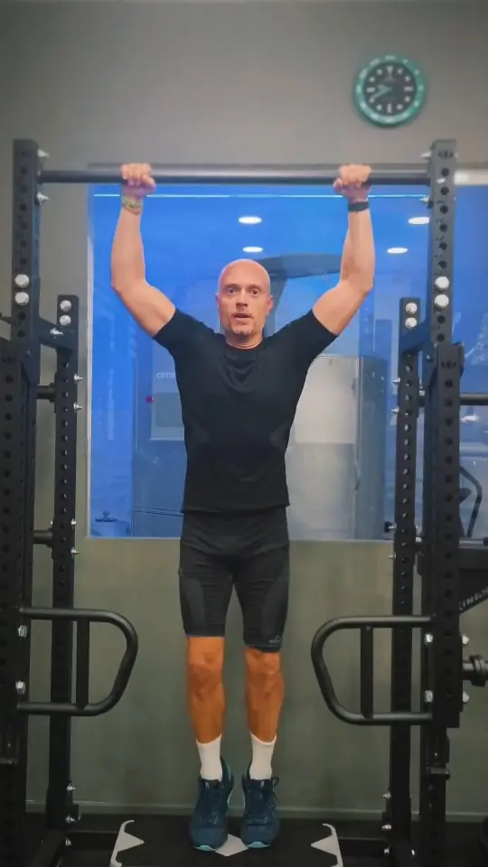
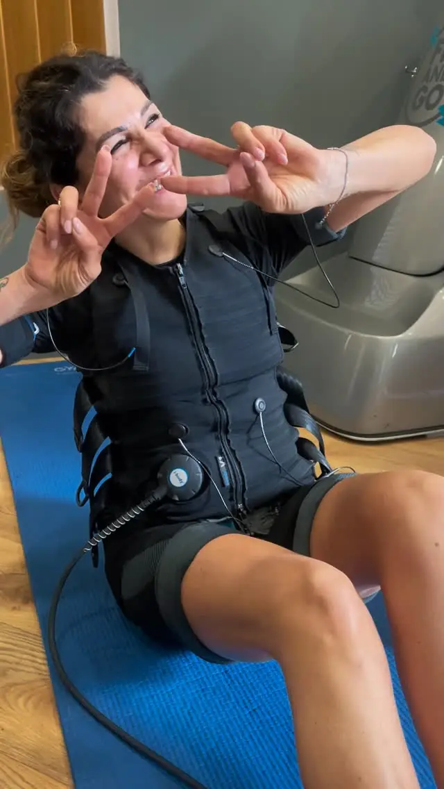
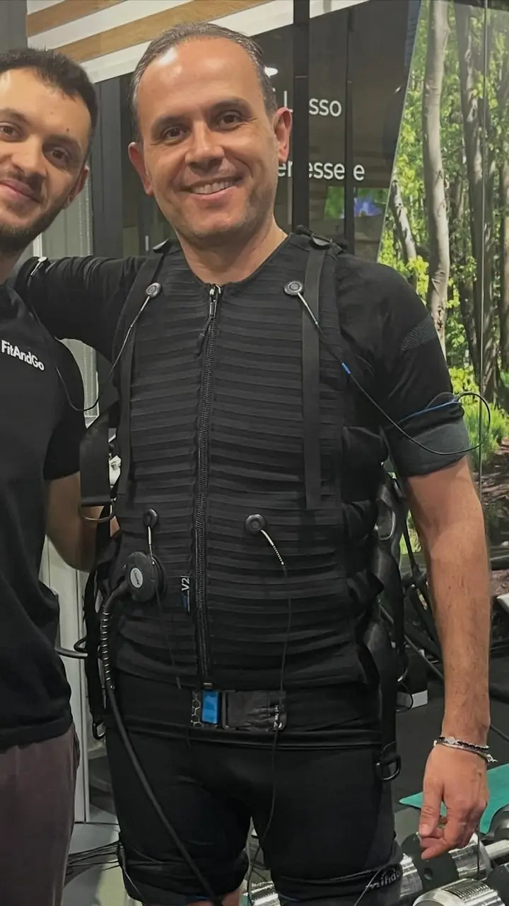
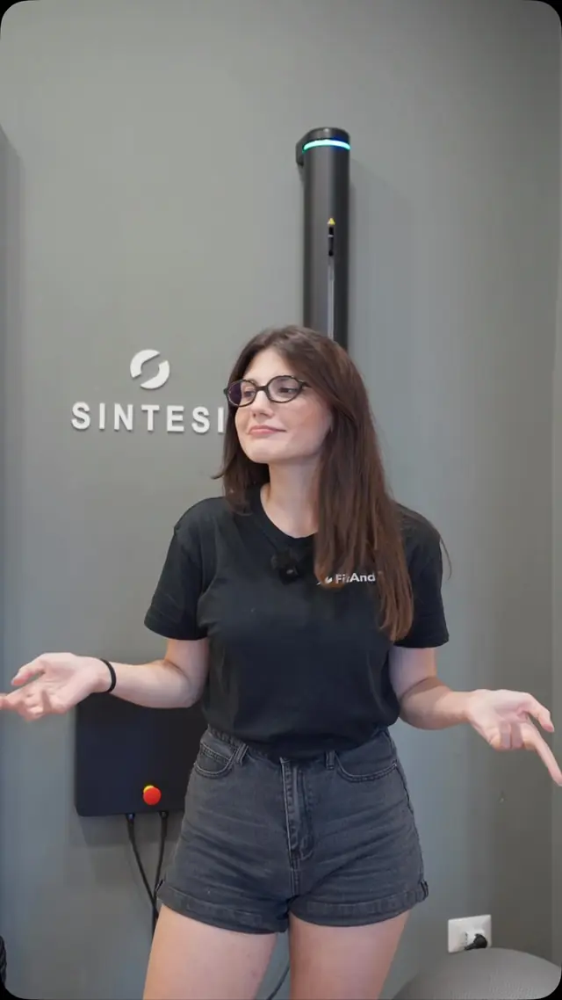
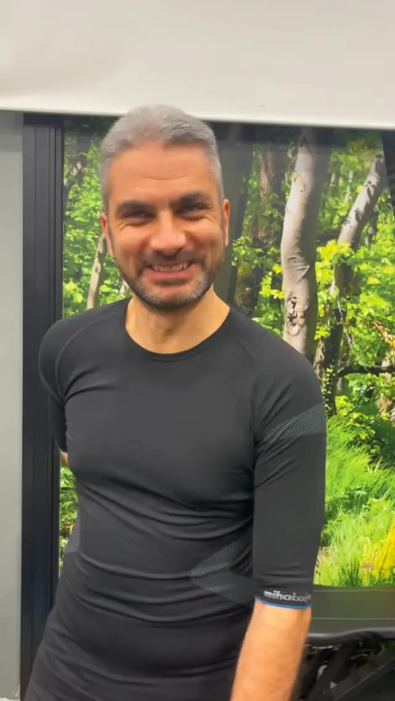
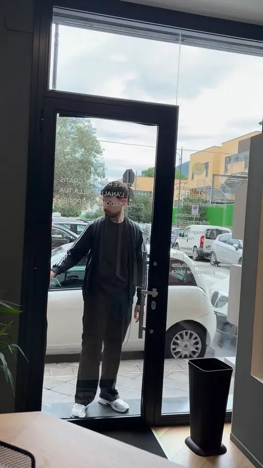

Recupero
Per tornare a muoverti bene dopo uno stop, con i tempi giusti.
Anteprima preparata per Fit And Go
Personal training 1 to 1 · Nocera Inferiore
Valutazione funzionale, programma su misura e un professionista solo per te. Su appuntamento, per chi ha poco tempo e vuole risultati che si misurano.

Non è una palestra. È un percorso su misura. Ogni allenamento è unico, come te.

Una scheda uguale per tutti
Un programma costruito sulla tua valutazione
Ti alleni da solo, tra tanta gente
Un professionista dedicato solo a te
Orari di punta e macchine occupate
Solo su appuntamento, senza attese
I progressi si guardano a occhio
I progressi si misurano, con dati impedenziometrici
Ore in sala per vedere qualcosa
Allenamenti mirati, anche in 30 minuti con l’EMS
Per tornare a muoverti bene dopo uno stop, con i tempi giusti.
Per rinforzare i punti deboli prima che diventino un problema.
Più forza, più tono, più resistenza. E i numeri lo confermano.
Un lavoro mirato quando schiena e postura chiedono attenzione.
Pensato per chi ha poco tempo: imprenditori, professionisti, chi lavora tutto il giorno e vuole allenarsi bene, non di più.
Una valutazione funzionale personalizzata: come ti muovi, dove sei forte, cosa va sistemato.
Costruito sui tuoi bisogni e sui tuoi obiettivi: recupero, prevenzione o performance.
Un professionista dedicato segue ogni esercizio. Su appuntamento, nei tuoi orari.
Ripetiamo le misure nel tempo, con i dati impedenziometrici: vedi i progressi, non li immagini.
Strumenti mirati, usati sempre con un professionista accanto. In studio trovi anche la digital gym.


Indossi una tuta che stimola i muscoli mentre fai gli esercizi, con il trainer che regola tutto. Allenamenti brevi e intensi.
~30’a sedutaPochi minuti in cabina, dopo l’allenamento o nei giorni di recupero. Ti seguiamo noi dall’inizio alla fine.
Un team plurispecializzato: chinesiologia clinica e di base, personal training, recupero. Ognuno con la sua strada, tutti sul tuo percorso.

Oltre 4.000 risultati documentati, con misure prima e dopo. E le persone che ce li raccontano.
«Due mesi fa evitava lo specchio. Oggi lo cerca.»Roberta · dalla sua storia su Instagram

E poi Giovanni G., cliente storico, Antonella e tanti altri. Le loro storie sono nei video sul nostro profilo. Guarda su Instagram

Via Guido Cucci 70
84014 Nocera Inferiore (SA)
Scrivici o chiamaci: troviamo insieme il giorno e l’orario. Ti prepariamo un percorso fatto su di te.